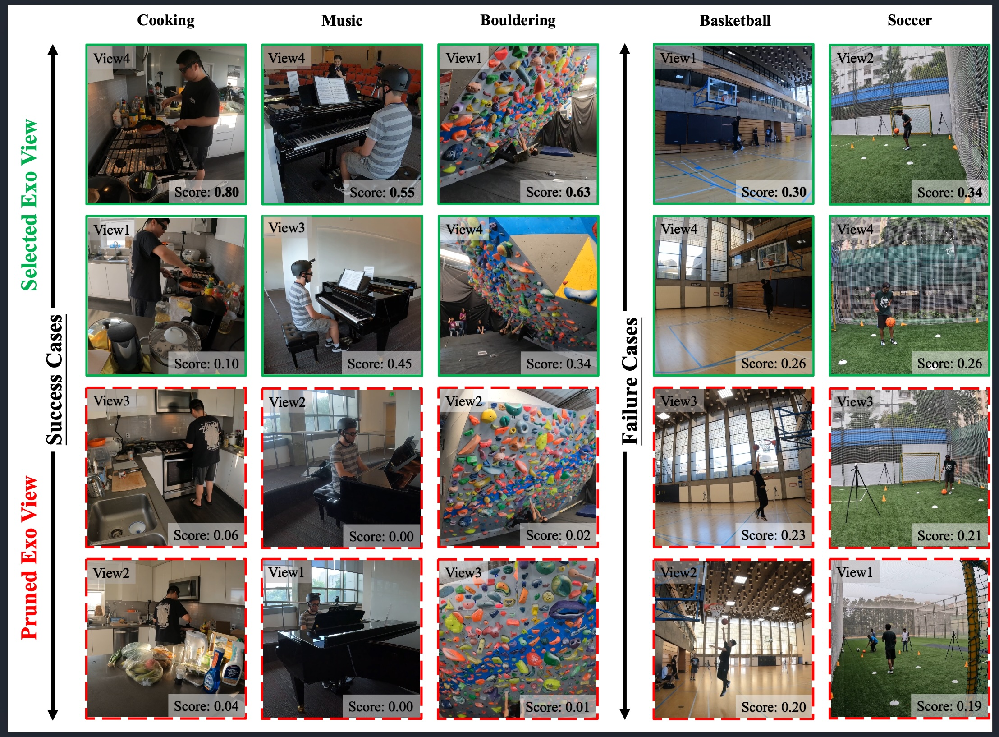

Ego–Exo proficiency estimation combines fine-grained motion cues from egocentric video with spatial context from multiple exocentric cameras. However, simply adding more exocentric views can degrade performance because redundant or noisy perspectives dilute discriminative information and enlarge the feature space, encouraging view-specific overfitting. We address these problems with two complementary components. AdaMVS adaptively identifies and fuses the most informative view tokens under weak supervision, while VIB-GB combines Variational Information Bottleneck regularisation with Gradient Blending to compress redundant signals and balance learning across ego and exo branches. Experiments on EgoExo-4D and EgoExo-Fitness show that the framework learns both which view to look at and how to fuse it, achieving state-of-the-art proficiency estimation with improved robustness and efficiency.
Different exocentric cameras often contain duplicated, occluded, blurred, or weakly informative content.
AdaMVS
Scores view tokens, selects the most informative Top-K exocentric views, and performs adaptive token-level fusion without explicit view-level labels.
More views enlarge the representation and can cause one branch to dominate, memorising view-specific patterns rather than generalisable cues.
VIBGradient Blending
Compresses non-essential latent information and dynamically balances ego/exo learning using overfitting-aware gradient weighting.
Across pretrained backbones, the proposed framework consistently improves over conventional Ego–Exo fusion. On EgoExo-4D, AdaMVS reaches 53.0% with K400 features, compared with 47.5% for SkillFormer. The ablation study also shows the complementarity of the two ideas: AdaMVS improves the ego–exo baseline from 45.5% to 48.0%, while the complete AdaMVS + CORN + VIB-GB configuration reaches 51.0% in the controlled ablation setting.
AdaMVS-Small achieves 50.1% Ego+Exo accuracy with an over 11× reduction in computation and model size relative to AdaMVS-Large, retaining strong performance while substantially reducing complexity.

In successful cases, high-scoring views provide clearer and more discriminative cues, while low-scoring views are often affected by occlusion, blur, or redundant content. The model selects the Top-2 exocentric views and prunes the rest. Failure cases occur when viewpoints contain highly overlapping information and receive similar scores.
1,087 hours of multiview video across nine activity categories, captured using one egocentric and four exocentric views, with proficiency labels across four discrete levels.
1,276 cross-view videos (about 32 hours), segmented into 6,131 single actions and annotated with interpretable action judgements and five-level quality scores.
Extra cameras may add duplicated, noisy, blurred, or occluded observations. Static fusion gives these weak views too much influence and also increases the capacity available for view-specific overfitting.
No. View importance is learned weakly from the proficiency-estimation task loss, without explicit view-level supervision.
VIB compresses redundant latent information, while Gradient Blending reweights ego and exo learning according to branch-level overfitting. Together they improve generalisation after view selection.
The selector is designed to be view-number agnostic through shared queries and permutation-invariant Transformer processing, allowing it to adapt to varying numbers of exocentric views.
@inproceedings{Dong2026AdaMVS,
author = {Xu Dong and Wanqing Li and Anthony Adeyemi-Ejeye and Andrew Gilbert},
title = {Moving Beyond More Views: Redundancy-Aware Ego--Exo Fusion for Proficiency Estimation},
booktitle = {European Conference on Computer Vision (ECCV)},
year = {2026}
}